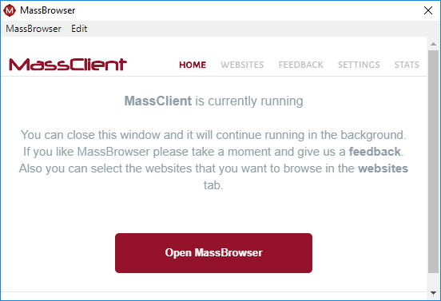
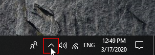
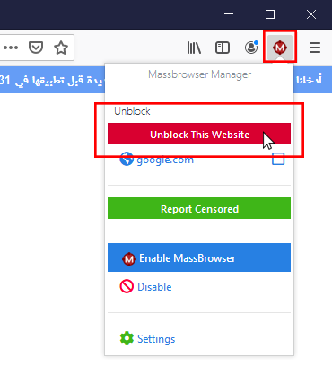

How to Open/Close MassBrowser
You can open the MassBrowser client by double clicking on the desktop shortcut. Then, click "Open MassBrowser" button to open the browser. You can close the setting page at any time.

Note that closing the browser will not close the MassBrowser application and double click action on the desktop shortcut will open the MassBrowser(Firefox) not the setting page. If you need to close it or reopen it, you can find it as a hidden application icon:
-
click on "Show hidden icons"
-
Find MassBrowser icon and press right click on the icon

-
Now you can re-open the MassBrowser setting page or its browser, or you can exit the application.

How to Unblock a Certain Page
Installing the plugin:
You need to have MassBrowser plugin installed on your Firefox to unblock a certain page that we are not currently supporting. If you are using the bundle version, the plugin is already installed and you should be able to see the plugin icon on the top right side of your Firefox window.If you do not see the plugin, make sure MassBrowser is running and then open this link using your Firefox.
Using the plugin:
Click on the MassBrowser plugin and then click on "Unblock This Website". Now MassBrowser will remember to use Tor for this website.

Change the Settings of MassBrowser

You could change the settings of your MassClient in this page.
Change Language:
At this moment we support English and Chinese. Use the drop down in front of the "Language Setting" to change your client language. You could always change this setting at anytime.
Send us feedback:
You can send us feedback through the "Feedback tab".
See your connections:
Navigate to the "STATS" tab to see your current connections.
Frequently Asked Questions
My Firefox says "The proxy server is refusing connections", what should I do?
Make sure your MassBrowser is running. If you are not using the bundle version check the proxy settings in your firefox network section.
The website I want to visit is still censored. What should I do?
To unblock everything you need to use the plugin. Check this guide to unblock a certain website.
Do I have privacy/anonymity when using MassBrowser?
Please refer to our privacy policy to see our privacy protections. In short, if you need privacy protection, you should use privacy tools like Tor (good news, you can use Tor through MassBrowser by going to our setting page). When you use MassBrowser, you should assume that third-parties will learn the websites that you visit (but not their contents for HTTPS connections).
How do I use MassBrowser to unblock Telegram or Tor?
You need to download Tor or Telegram. Then, go to the setting page of MassBrowser and change the setting of Tor/Telegram to tunnel their traffic through MassBrowser.